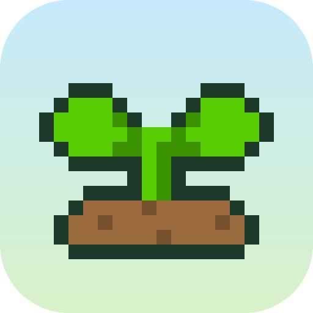
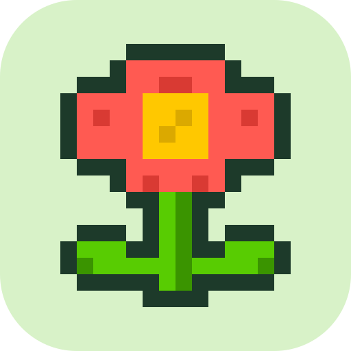
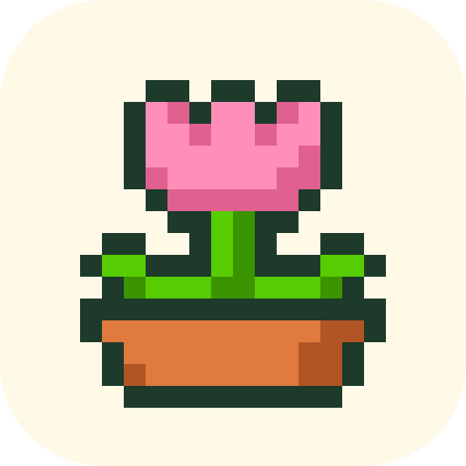
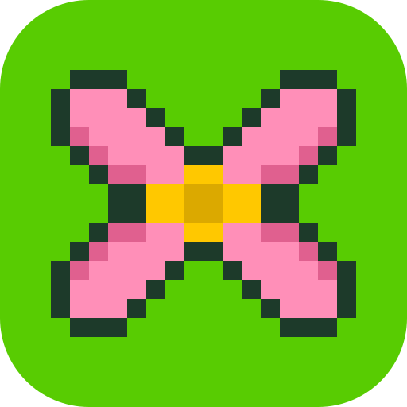

Gångis app icons
Four pixel-art options in the app's palette. Shown large, at favicon sizes (16, 32, 64 px) and on a home screen.
Groddis
A sprout in a soil mound, sky-to-meadow background

Blomma
A red flower with a sunny centre and two leaves

Tulpan
A pink tulip in a terracotta pot

Gångerblomma
Four petals that make a × sign: a flower and a times table

Gångis
Gångis
Gångis
Gångis